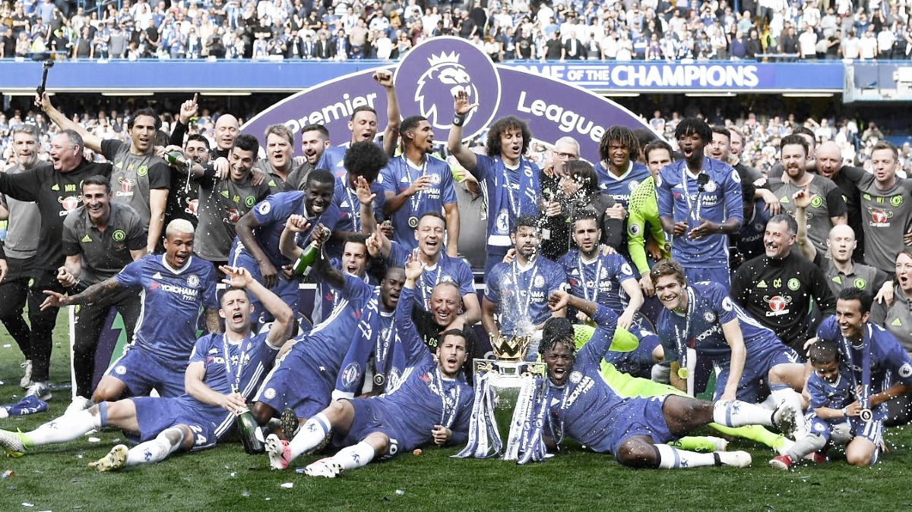

UEFA Champions League
- Year: 2012, 2021
- Manchester City VS Chelsea 0-1 Full Match Video
- Manchester City 0-1 Chelsea | Champions League 20/21 Match Highlights
-
In 29 May 2021, Chelsea beat Manchester City 1-0 and won their second UEFA Champions League championship.
First Division/Premier League
- Year: 1955, 2005, 2006, 2010, 2015, 2017 
- 2016 - 2017 Chelsea Football Club Season
-
2016 - 2017 season Best first startup eleven squad
Diego Costa
Eden Hazard Pedro
Marcos Alonso Nemanja Matić N'Golo Kanté Victor Moses
Gary Cahill David Luiz César Azpilicueta
Thibaut Courtois
FA Cup
- Year: 1970, 1997, 2000, 2007, 2009, 2010, 2012, 2018
- Chelsea 1-0 Manchester United | Hazard Wins it for Chelsea! | Emirates FA Cup Final 2017/18
In 19 May 2018, Chelsea beat Manchester United 1-0. An Eden Hazard penalty saw Chelsea lift their eighth FA Cup with a 1-0 win over Manchester United.
League Cup
- Year: 1965, 1998, 2005, 2007, 2015
UEFA Europa League
- Year: 2013, 2019
- Match Report
- Chelsea Lift The Europa League Trophy! üèÜ Exclusive Footage | Unseen Extra
-
2019 05 29 Chelsea VS Arsenal 4-1 Starting 11
-
Manager : Maurizio Sarri
Kepa
Azpilicueta David Luiz Christensen Emerson
N'Golo Kanté Jorginho Kovacic
Pedro Giroud Hazard
UEFA Cup Winners' Cup
- Year: 1971, 1998
FIFA Club World Cup
- Year: 2021
- Chelsea FC v Palmeiras | FIFA Club World Cup UAE 2021 | Match Highlights
- Chelsea v Palmeiras | FIFA Club World Cup 2021 | Final | Full Match

In 12 February 2022, Chelsea won their first FIFA Club World Cup by beating Palmeiras 1-0 in the final.
Chelsea Goal: Romelu Lukaku(55'), Kai Havertz(117' pen)
It was last trophy in Abramovich era before on 10 March 2022, the British government announced sanctions on Abramovich with Chelsea allowed to operate under a special license until 31 May.
After he got this trophy, Abramovich got all important trophies in his Chelsea owner.
UEFA Super Cup
- Year: 1998, 2021
- Chelsea 1-1 Villarreal (AET 6-5) | UEFA Super Cup 2021 Match Highlights
- Match Report
-
Manager: Thomas Tuchel
-
Starting 11 VS Villarreal
-
Chelsea Goal: Hakim Ziyech (27')
Edouard Mendy
Zouma Trevoh Chalobah Rudiger
Hudson-Odoi N'Golo Kanté Kovacic Marcos Alonso
Hakim Ziyech Kai Havertz Werner
Charity/Community Shield
- Year: 1955, 2000, 2005, 2009
Full Members' Cup
- Year: 1986, 1990